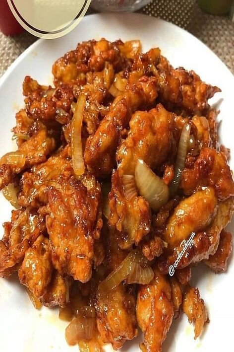

Menu Masakan
Ayam Goreng Serundeng
ayam Goreng Ketumbar
Ayam Cabe Ijo

Ayam Teriyaki

Bukalah dan kembangkan kreatifitas anda mengenai kuliner yang anda gemari dengan mudah dan cepat dan ter Up-to Date


Mengenai website Resep Makanan ini Di khsuskan untuk semua para kalangan untuk mempermudah mencari sebuah resep dan tidak harus lagi untuk mencatat resep di buku secara manual, dengan website resep makanan yang saya buat agar semua para kalangan lebih simpel dan praktis dalam membuat sebuah hidangan hanya dengan membuka Handphone Masing-Masing dan di website ini terdapat pula menu hidangan seperti Menu Masakan Kue, Minuman dan juga Desert yang menggugah slera para kaum pencinta kuliner yang up-to Date dan.
Bahan
1. 1Kg Ayam
2. 1/2 Bumbu Kuning ("Munik")
3. 50gr Kelapa Parut (Setengan Tua)
4. 2 Ruas Laos (Parut)
5. 1sdt Garam
6. 1sdt Kaldu Bubuk
7. 1250ml Air
Langkah Memasak
1. Cuci Ayam Kemudian Potong "Sesuai slera hingga menjadi beberapa bagian".
2. Masak ayam,dan buang air 1,masukan bumbu kuning,laos,kelapa,garam,
kaldu bubuk dan air, kemudian aduk hingga rata, masak sampai bumbu meresap.
3. Setelah ditiriskan, goreng ayam hingga kekukingan/golden brown, selanjutnya goreng
parutan kelapa hingga menguning dan matang, kemudian siap disakjika.
Bahan - Bahan
1. 1/2 Ekor Ayam
1. 1 Bungkus Desaku Marinasi
2. 2 siung Bawang Putih
3. 2 sdt Ketumbar bubuk
4. 1 sdt Lada bubuk
5. 2 sdm Tepung maezena
Langkah Memasak
1. potong ayam sesuai slera, cuci bersih dan taburi desaku
marinasi dan campurkan hingga merata
2. Tambahkan 2sdm tepung maezena, lada, ketumbar bubuk dan sedikit
air, lalu campurkan hingga merata
3. Kemudian goreng dengan minyak yang panas dan api kecil.
4. setleh golden brown, angkat dan tiriskan
5. ayam siap disajikan untuk dinikmati
Bahan - Bahan
1. 1 kg ayam (paha), potong-potong
2. 1 butir jeruk nipis
3. 2 lembar daun salam
4. 2 lembar daun jeruk
5. 2 ruas lengkuas, geprek
6. 2 batang sereh, geprek
7. secukupnya daun bawang
8. 1/4 sdt lada bubuk
9. 1/2 sdt garam
10. 1 sdt kaldu jamur
11. secukupnya minyak goreng
12. secukupnya air
Bahan Bumbu Cabe Ijo
1. 5 butir bawang putih
2. 7 butir bawang merah
3. 2 buah tomat hijau
4. 5 batang cabe ijo keriting
5. 2 ruas lengkuas, geprek
Bahan Ayam Ungkep
1. 4 butir bawang putih
2. 2 butir kemiri
3. 1-2 ruas kunir
4. 1 sdt garam
5. 1/2 sdt lada bubuk
6. 1 sdt kaldu ayam
Langkah Memasak
1. Siapkan semua bahan.Potong2 ayamnya & beri perasan jeruk nipis lalu cuci bersih / bilas.
2. Haluskan Bahan Ayam Ungkep. Kemudian panaskan minyak goreng dalam wajan, masukkan bumbu ayam ungkep, beri daun jeruk,
daun salam, lengkuas dan sereh. Tumis hingga harum. Masukkan tumisan ke dalam panci berisi air mendidih.
3. Masukkan ayamnya, rebus hingga matang. Kemudian goreng tapi jgn terlalu kering. Tiriskan.
4. Haluskan semua Bahan Bumbu Cabe Ijo.
5. Panaskan minyak goreng (boleh pakai sisa menggoreng ayam, tapi pakai secukupnya saja) tumis bumbu halus hingga harum,
masukkan daun salam, daun jeruk, sereh dan lengkuas geprek dari rebusan ayam ungkep tadi dan beri sedikit kuah rebusan
ayam ungkepnya. Terakhir masukkan gula, garam, lada bubuk, kaldu jamur, aduk rata.
6. Masukkan ayam gorengnya dan tumis hingga air menyusut dan bumbu meresap. Terakhir masukkan irisan daun bawang dan aduk rata.
Ayam Cabe Ijo siap sajikan.
Bahan - Bahan
1. 500 gr dada ayam
2. 1 siung bawang bombay
3. 3 siung bawang putih
4. 5 buah cabai hijau buang biji (optional)
5. 2 batang daun bawang
6. 1 sdt minyak wijen
7. 1 sdm kecap asin
8. 2 sdm saus teriyaki
9. 1 sdm margarin (optional)
10. 1 sdm kecap manis
11. 1 sdt kaldu jamur
12. 2 cm jahe (parut)
13. 1 sdt lada bubuk
14. 1 sdt maizena (larutkan)
15. 3 sdm minyak goreng
16. 50 ml air
17. secukupnya garam
Langkah Memasak
1. Potong dada ayam kecil dengan bentuk memanjang,marinasi dengan kecap asin, kecap manis,minyak wijen, margarin,saus teriyaki,
jahe yg sudah diparut (diamkan 30 menit).
2. Cincang bawang putih,potong kasar bawang bombai,potong serong cabai hijau,
potong batang daun bawang 3cm,larutkan maizena dengan sedikit air.
3. Panaskan wajan,beri minyak goreng,tumis bawang putih kemudian masukkan ayam yang sudah dimarinasi sebelumnya,masukkan air,masak hingga ayam sudah matang,masukkan larutan maizena,
potongan bawang bombai,batang daun bawang,cabai hijau, seasoning (garam,lada,kaldu jamur) koreksi rasa.matikan api siap sajikan
Bahan - Bahan
1. 1 pcs Dada Ayam Fillet
2. 1 lembar Smoked Beef (bisa diganti Beef/Chicken Ham)
3. 1 lembar MEG Cheddar Slice
4. 1-2 sdm parutan MEG Cheddar Blok
5. 1/2 sdt Bubuk Bawang Putih
6. 1/2 sdt Garam
7. 1/4 sdt Lada Putih
8. 1/4 sdt Kaldu Bubuk
9. 6 sdm Tepung Terigu (dicampur dengan sejumput garam, lada, dan bubuk bawang putih)
10. 100 gr Tepung Roti (Panko)
11. 1 butir Telur
12. 500 ml Minyak Goreng
13. 1-2 lembar Daun Selada
14. 1 buah Tomat
Langkah Memasak
1. Belah dada ayam membentuk butterfly cut, Putar, kemudian belah lagi bagian di bawahnya sehingga terbuka dengan tiga belahan melebar,
Tutup semua bagian dada ayam dengan plastik wrap, lalu pukul dengan rolling pin sehingga ukuran dada ayam menjadi lebih pipih dan melebar
Taburi dada ayam dengan bubuk bawang putih, kaldu bubuk, garam, dan lada lalu ratakan hingga seluruh bagian dada terbumbui
2. Potong MEG Cheddar Blok pada garis kedua plastik, dan Parut potongan MEG Cheddar Blok, lalu taburi di atas dada ayam
3. Letakkan smoked beef di atasnya,Siapkan 1 lembar MEG Cheddar Slice lalu letakkan di atas smoked beef
Lipat kembali dada ayam membentuk bentuk semula sebelum dipotong
4. Siapkan tepung terigu dan bumbui dengan sejumput bubuk bawang putih, garam, dan lada lalu aduk hingga rata
Kocok lepas 1 butir telur,Siapkan tepung roti panko,Balur ayam dengan tepung dilanjutkan dengan telur
5. Balur kembali ayam dengan tepung dan dilanjutkan dengan telur lagi,
Terakhir, balur dengan tepung roti
6. Panaskan minyak goreng di dalam wajan. Setelah panas, masukkan ayam dan goreng dengan api kecil.
Siram-siram minyak ke bagian atas ayam yang tidak tercelup minyak. Kemudian saat sudah setengah matang balik ayam.
7. Ulangi langkah menggoreng dengan menyiram-nyiram minyak ke bagian atas ayam agar matang sempurna. Saat sudah golden brown,
angkat ayam dan tiriskan minyak. Chicken Cordon Bleu siap disajikan.
8. Sebelum dipotong, diamkan dulu Chicken Cordon Bleu sampai suhunya agak dingin agar tidak hancur. Lalu belah sesuai selera
Tambahkan sayur selada dan potongan tomat sebagai pelengkap. Chicken Cordon Bleu Ekonomis siap disantap!
Bahan - Bahan
1. 1 bks chicken wing so good
2. Minyak untuk menggoreng ayam
Bahan Saos
1. 1/2 sdt saos hot lava volcano merk mamasuka
2. 1/2 sdt saos korean spicy merk mamasuka
3. 1/2 sdt saus tiram
4. 1/2 sdt kecap manis
5. 1/2 sdt minyak wijen
6. Sejumput kaldu jamur,gula pasir,wijen sangrai,nori
Langkah Memasak
1. Campurkan semua ayam dengan bumbu yang sudah di siapkan, lalu Goreng ayam hingga matang, tiriskan
2. Aduk dan campur semua bahan saos kemudian satukan bersama ayam goreng tadi. Beri wijen dan nori, siap disajikan
Bahan - Bahan
1. 1/2 kg kentang, potong2 dan goreng
2. 5 cabe rawit halus
3. 7 cabe keriting halus
4. 1 siung bawang putih halus
5. 3 siung bawang merah halusbr>
6. 3 lembar daun jeruk
Langkah Memasak
1. Tumis bawang putih dan merah, serta daun jeruk hingga harum. Masukan cabe, garam, gula. kemudian siram kentang yang sudah di goreng dengan bumbu yanng sudah dibuat
Bahan - Bahan
1. 1 kg daging sapi
2. 1/2 liiter santan dari 2 butir kelapa.
Bahan Halus
1. 1/2 kg cabe merah
2. 15 siung bawang merah
3. 7 siung bawang putih
4. 4 batang serai
5. 4 ruas jari lengkuas muda
6. 2 sdm ketumbar
7. 1 sdt merica
8. 1 sdm kemiri
9. 1/4 buah pala
Bahan Pelengkap
1. 10 lembar daun jeruk purut
2. 1 lembar daun kunyit
3. 2 lembar daun salam
4. 5 butir cengkih
5. 2 kembang lawang
6. 5 buah kapulaga
7. Garam
Langkah Memasak
1. Siapkan daging yang sudah dipotong, cuci bersih dan tiriskan.
2. Buat santan dari 2 kelapa, 1 liter santan kental, 1½ liter santan encer.
3. Haluskan semua bumbu halus.
4. Masukkan bumbu kedalam wajan, campur dengan bumbu pelengkap.Mulai panaskan sambil diaduk aduk.
5. Tambahkan separuh santan kental dan semua santan encer.
6. Biarkan mendidih sambil diaduk.
7. Masukkan daging, 2 sdt garam, masak sampai air tampak berminyak.
8. Masukkan sisa santan kental, lanjutkan memasak sampai menyusut kemudian Tambahkan garam sesuai selera. Kebetulan saya punya kacang merah rebus, jadi saya masukkan sekalian.
9. masak selam kurang lebih 3 j kemuduan angkat dan sajikan.
Bahan -Bahan
1. 2 bonggol pakcoy (sawi cendok)
2. Secukupnya air untuk merebus.
3. 1/4 sdt garam
4. 1/4 sdt minyak wijen.
Bahan Saus
1. 1/2 sdm minyak goreng (untuk menumis)
2. 2 siung bawang putih (cincang halus)
3. 200 ml air
4. 1 sdm kecap manis
5. 1 sdm saos tiram
6. 1/2 sdt garam
7. 1 sdt kaldu jamur (Totole)
8. 2 sdt tepung maizena
9. 1 sdm air (untuk melarutkan maizena)
Langkah Memasak
1. Geprek kemudian Cincang halus bawang putih.
2. Cuci bersih pakcoy kemudian tiriskan.
3. Didihkan air, tambahkan garam dan minyak wijen.
Masukkan pakcoy hingga sesuai selera kemudian
tiriskan, lalu tata di piring saji. Note : Biasanya saat merebus, saya masukkan bagian bonggol terlebih dahulu,Karena bagian bonggol lumayan agak lama dibanding dgn bagian daun
Setelah bonggol agak lunak, masukkan seluruh bagian sawi pakcoy.
4. Panaskan minyak goreng di teflon,Tumis bawang putih hingga harum. Tambahkan air, saos tiram, kecap manis, garam dan kaldu.
5. Masak hingga mendidih. Setelah mendidih masukkan tepung maizena yang sudah dilarutkan dgn air.
6. Masak hingga mengental dan mendidih, sambil diaduk, matikan api kompor. Tuang saus diatas sawi pakcoy, sajikan saat hangat
Bahan -Bahan
1. 3 ikat kangkung
2. 2 siung bawang putih
3. 6 siung bawang merah
4. 2 biji tomat kecil
5. 2 buah cabe besar merah
6. 2 buah cabe besar hijau
7. Penyedap rasa
8. 1 sdm gula pasir
9. secukupnya Saos tiram
Langkah Memasak
1. Cuci bersih kangkung dan siangi, iris² cabe, tomat, bawang
2. Tumis bawang, cabe, tomat sampai harum, lalu tambangkan kakngkung dan air
3. Jika air sudah mendidih tambahkan penyedal rasa, gula dan saos tiram aduk rata. Kemudian tutup teflon dan diamkan ±3 menit. Buka tutup, cek rasa dan siap di sajikan.
Bahan -Bahan
1. 2 bonggol pakcoy (sawi cendok)
2. Secukupnya air untuk merebus.
3. 1/4 sdt garam
4. 1/4 sdt minyak wijen.
Bahan Saus
1. 1/2 sdm minyak goreng (untuk menumis)
2. 2 siung bawang putih (cincang halus)
3. 200 ml air
4. 1 sdm kecap manis
5. 1 sdm saos tiram
6. 1/2 sdt garam
7. 1 sdt kaldu jamur (Totole)
8. 2 sdt tepung maizena
9. 1 sdm air (untuk melarutkan maizena)
Langkah Memasak
1. Geprek kemudian Cincang halus bawang putih.
2. Cuci bersih pakcoy kemudian tiriskan.
3. Didihkan air, tambahkan garam dan minyak wijen.
Masukkan pakcoy hingga sesuai selera kemudian
tiriskan, lalu tata di piring saji. Note : Biasanya saat merebus, saya masukkan bagian bonggol terlebih dahulu,Karena bagian bonggol lumayan agak lama dibanding dgn bagian daun
Setelah bonggol agak lunak, masukkan seluruh bagian sawi pakcoy.
4. Panaskan minyak goreng di teflon,Tumis bawang putih hingga harum. Tambahkan air, saos tiram, kecap manis, garam dan kaldu.
5. Masak hingga mendidih. Setelah mendidih masukkan tepung maizena yang sudah dilarutkan dgn air.
6. Masak hingga mengental dan mendidih, sambil diaduk, matikan api kompor. Tuang saus diatas sawi pakcoy, sajikan saat hangat
Bahan -Bahan
1. 2 bonggol pakcoy (sawi cendok)
2. Secukupnya air untuk merebus.
3. 1/4 sdt garam
4. 1/4 sdt minyak wijen.
Bahan Saus
1. 1/2 sdm minyak goreng (untuk menumis)
2. 2 siung bawang putih (cincang halus)
3. 200 ml air
4. 1 sdm kecap manis
5. 1 sdm saos tiram
6. 1/2 sdt garam
7. 1 sdt kaldu jamur (Totole)
8. 2 sdt tepung maizena.
9. 1 sdm air (untuk melarutkan maizena).
Langkah Memasak
1. Geprek kemudian Cincang halus bawang putih.
2. Cuci bersih pakcoy kemudian tiriskan.
3. Didihkan air, tambahkan garam dan minyak wijen.
Masukkan pakcoy hingga sesuai selera kemudian
tiriskan, lalu tata di piring saji. Note : Biasanya saat merebus, saya masukkan bagian bonggol terlebih dahulu,Karena bagian bonggol lumayan agak lama dibanding dgn bagian daun
Setelah bonggol agak lunak, masukkan seluruh bagian sawi pakcoy.
4. Panaskan minyak goreng di teflon,Tumis bawang putih hingga harum. Tambahkan air, saos tiram, kecap manis, garam dan kaldu.
5. Masak hingga mendidih. Setelah mendidih masukkan tepung maizena yang sudah dilarutkan dgn air.
6. Masak hingga mengental dan mendidih, sambil diaduk, matikan api kompor. Tuang saus diatas sawi pakcoy, sajikan saat hangat
Bahan
1. 5 btr telur.
2. 180 gr gula pasir.
3. 1 sdt SP.
4. 1/4 sdt vanili bubuk.
5. 1/4 sdt garam.
6. 180 gr tepung terigu.
7. 65 ml santan instan.
8. 130 ml minyak goreng.
Langkah Memasak
1. Mixer telur, gula pasir, SP, vanili bubuk dan garam hingga mengembang dan kental berjejak.
2. Masukan tepung terigu, mixer sebentar asal rata.
3. Masukan minyak goreng dan santan, aduk rata.
4. Bagi adonan dan masing2 beri pewarna.
5. Tuang adonan kedalam loyang yg sudah diolesi minyak goreng dan dilapisi baking paper (me : 18 x 18 x 7cm).
6. Untuk urutan warna adonan boleh sesuai selera.
7. Kukus tiap lapisan selama 5 menit untuk lapisan terakhir kukus selama 20 - 25 menit atau hingga matang.
8. Keluarkan dari loyang dan biarkan dingin, lalu potong memanjang dgn ketebalan tidak lebih dari 0,5cm.
9. Lakukan hingga selesai.
10. Ambil 1 lembar kue, olesi selai lalu gulung kemudian bungkus dgn plasti, lakukan hingga selesai.
11.Lalu Sajikan selagi hangat.
Bahan - Bahan
Bahan A :
1. 175 gram tepung terigu protein tinggi.
2. 50 gram tepung terigu protein sedang.
3. 10 gram susu bubuk.
4. 5 gram ragi instant.
5. 1 gram bread improver.
6. 55 gram gula kastor.
Bahan B :
1. 30 ml susu cair.
2. 100 ml air es (masukkan sedikit2, tdk harus habis).
3. 1 butir kuning telur ukuran besar.
Bahan C :
1. 5 gram garam.
2. 50 gram mentega.
Bahan Olesan :
1. 1 butir kuning telur.
2. 1 sdm susu cair.
Bahan Isian + Topping :
1. 10 buah sosis sapi.
2. Mayonaise Mamayo.
3. Saus tomat, Saus sambal.
4. Keju quick melt parut.
5. Parsley cincang.
Langkah Memasak
1. Campur bahan A, aduk rata. Tambahkan susu cair dan kuning telur, mixer.
2. Tuangkan air es sedikit2 sambil dimixer hingga adonan kalis (tdk menempel di wadah).
Airnya jangan dituangkan semua ya... Nanti adonannya kelembekan. Cukup sampai kalis saja.
Setelah adonan kalis, tambahkan bahan C, mixer lagi hingga kalis elastis (Ini tahap yg sangat penting).
3. Bulatkan adonan, tutup dengan serbet lembab. Diamkan ± 1 jam atau hingga adonan mengembang 2x lipat.Setelah 1 jam,
kempiskan adonan. Timbang adonan 50 gr. Bulatkan. Diamkan lagi 15 menit.
4. Siapkan bahan isian & topping.
5. Bentuk adonan sesuai selera.Yg pertama saya bentuk caterpillar bread. Ambil 1 buah sosis, bungkus dengan 1 buah adonan roti.
6. Iris2 adonan. Tarik irisan adonan kekanan & kekiri secara zig zag. Masukkan kedalam cup.
7. Yg kedua, ambil 1 buah adonan, gulung memanjang, pipihkan. Beri 1 buah sosis diatasnya. Masukkan kedalam cup.
8. Diamkan kembali adonan yg telah dibentuk ± 1 jam atau hingga mengembang hampir 2x lipat.
9. Beri topping & bahan olesan.Panggang pada suhu 180°C selama 15-20 menit di oven yg sudah dipanaskan minimal 10 menit (sesuaikan dgn oven masing2).
Angkat dari oven, segera olesi butter saat masih panas agar kulit rotinya lembab & wangi.
10. Dinginkan di cooling rack.Agar lebih awet, masukkan kedalam wadah kedap udara atau dibungkus dgn plastik satu persatu.
Bahan - Bahan
1. 4 btr Telur.
2. 60 gr Gula pasir.
3. 1 sdt SP.
4. 1/5 sdt Garam.
5. 60 gr Tepung terigu protein sedang.
6. 10 gr Tepung maizena.
7. 3/4 sdt Pasta pandan.
8. 50 gr Minyak kelapa.
Isian dan Topping :
1. 6 buah Pisang raja.
2. 1 sdm Margarine.
3. 100 gr Buttercream.
4. Secukupnya Coklat serut atau meses.
5. 160 gr Chocolate coating.
Langkah Memasak
1. Belah 2 pisang raja. Masak di wajan dengan margarine sambil ditekan hingga matang kecoklatan. Angkat dan sisihkan..
2. Mixer telur, gula pasir, SP, garam, tepung terigu dan tepung maizena dengan kecepatan tinggi hingga mengembang.
Masukkan pasta pandan, kocok hingga rata. Masukkan minyak kelapa lalu aduk rata dengan spatula.
3. Tuangkan adonan ke loyang 30x35x3 cm yang sudah dioles dan dialas baking paper. Ratakan lalu panggang dalam oven yang sudah dipanaskan dengan suhu 180°C selama 12 menit.
Angkat, hentakkan loyang, balik dan lepaskan baking paper.
4. Balikkan dan belah 2 cake. Susun pisang, beri butter buttercream, taburi coklat lalu tutup dengan pisang. Gulung cake, rapatkan lalu simpan dalam kulkas hingga se..
5. Lelehkan chocolate coating dengan double boiler. Potong cake menjadi 14 5cm. Celupkan 1 sisi lalu biarkan beku lalu celupkan sisi lainnya. Simpan di kulkas,
Selanjutnya dapat disajikan saat dingin.
Bahan - Bahan
Bahan A :
1. 1 kuning telur.
2. 2 sdm tepung terigu.
3. 1-2 sdm süsü cair.
4. 1/2 sdt vanili.
5. 1/4 sdt garam.
Bahan B :
1. 1 putih telur.
2. 1/4 sdt cream tar tar or 1/2 perasan jeruk lemon.
3. 1 sdm gula pasir.
Topping
1. Fruit, honey, icing sugar etc.
Langkah Memasak
1. Bahan a, kocok Telur dengan whisk tangan masukan terigu sedikitDemi Sedikit berikut dengan süsü selang selling.
2. Masukan vanilla dan garam kocokHingga semua bahan tercampur Dan konsistense halus.
3. Sementar panaskan wajan yang sudah di ölesi minyak goreng tissue MASAK ağar tidak terlalu banyak minyak tapi merata.
4. Mixer putih telur kece patan sedang masukan cream tartar or air lemon dan gula sedikit demi sedikit naikan kecepatan hingga tinggi dan mixer hingga konsistensi kaku.
5. Masukan adonan b ke adonan b sedikitDemi sedikit Sambil diaduk perlahan.
6. Kemudian dengan cetakan atau sendok Sayur masukan ke Wajan perlahan 2 format dan kasih 1 sdt air sisi,
per Sisi tutup wajan MASAK kürleb2-3 Menit tumpuk pancake jadi satu kasih air lagi sisi per sisi 1 sdt tutup wajan MASAK kürleb 2 menit dan angkat perlahan.
7. Sajikan dengan topping sesuai dengan selera.
Bahan - Bahan
1. 1 bgks oreo coklat.
2. 2 sdm blueband cair.
3. 4 lembar roti .
4. 1 bgks agar agar plain.
5. 3 gelas susu cair (saya pk indomilk).
6. 1 sdm maezena.
7. 1/2 bungkus keju cheddar procis.
8. 5 sdm gula (kalau suka manis boleh di tambah).
9. Coklat batangan (utk topingnya).
Langkah Memasak
1. Lelehkan blueband. Jika sdh meleleh. Matikan kompor dan sisihkan.
2. Blender halus 1 bgkus oreo. Lalu masukkan 2 sdm blueband yg sdh leleh tadi.
Blender sbntr. Lalu tuang ke cetakan (saya pakai cetakan bolu bulat kecil) tekan tekan sampai rata. Sisihkan.
3. Siapkan blender. Masukkan keju yg sdh di parut, roti tawar yg sudah di sobek sobek,
agar agar plain, gula pasir, tepung maezena dan susu. Blender smua bersamaan smpai halus.
4. Masak adonan yg telah diblender tadi dengan api kecil. Trus aduk aduk sampai mendidih dan mengental. Sampai Saat adonan diaduk aduk mulai berat.
5. Tuangkan kecetakan oreo yg telah dihaluskan tadi. Biarkan smpai mengeras dan dingin Keluarkan dr cetakan. Hiasi dengan coklat parut.
(Boleh pakai coklat bubuk. Boleh pakai taburan oreo halus). Krn saya gak punya coklat bubuk dan lupa nyisain oreo halus. Jd pk yg ada aja. Coklat batangan di parut.
6. Chesscake oreo coklat siap dihidangkan.
Bahan - Bahan
1. 5 btr telur.
2. 180 gr gula pasir.
3. 1 sdt SP.
4. 1/4 sdt vanili bubuk.
5. 1/4 sdt garam.
6. 180 gr tepung terigu.
7. 65 ml santan instan.
8. 130 ml minyak goreng.
Langkah Memasak
1. Mixer telur, gula pasir, SP, vanili bubuk dan garam hingga mengembang dan kental berjejak.
2. Masukan tepung terigu, mixer sebentar asal rata.
3. Masukan minyak goreng dan santan, aduk rata.
4. Bagi adonan dan masing2 beri pewarna.
5. Tuang adonan kedalam loyang yg sudah diolesi minyak goreng dan dilapisi baking paper (me : 18 x 18 x 7cm).
6. Untuk urutan warna adonan boleh sesuai selera.
7. Kukus tiap lapisan selama 5 menit untuk lapisan terakhir kukus selama 20 - 25 menit atau hingga matang.
8. Keluarkan dari loyang dan biarkan dingin, lalu potong memanjang dgn ketebalan tidak lebih dari 0,5cm.
9. Lakukan hingga selesai.
10. Ambil 1 lembar kue, olesi selai lalu gulung kemudian bungkus dgn plasti, lakukan hingga selesai.
11. Sajikan
Bahan - Bahan
Bahan Kering :
1. 105 gr tepung terigu (resep asli 125 gr terigu, tanpa susu bubuk).
2. 20 gr susu bubuk.
3. 1/2 sdt baking powder .
Bahan 1 :
1. 125 gr mentega.
2. 100 gr gula pasir (resep asli 125 gr).
3. 3 butir telor.
Buah kering :
1. 100 gr kismis (resep asli 200 gr kismis & sukade).
Peralatan :
1. Loyang oval uk 20 tinggi 5 cm.
Langkah Memasak
1. Kismis taburi tepung terigu sedikit, gulung2kan hingga tertutup terigu. Gunanya agar nanti kismis tidak
tenggelam saat dimasak dicampur dg adonan.Siapkan semua bahan.
2. Mixer mentega dg speed tinggi hingga lembut dan berwarna pucat (2 menit), lalu masukkan gula pasir.
Lanjut mixer hingga gula tercampur rata.
3. Kemudian masukkan BAHAN 2 yaitu telor, masukkan 1 per 1 sambil tetap dimixer.Lalu turunkan speed mixer ke terendah,
masukkan BAHAN KERING. Masih tetap di speed terendah, mixer terus selama 4 menit. Setelah itu matikan mixer, masukkan sebagian kismis (sisakan sedikit untuk toping),
aduk balik dg spatula. Kemudian tuang adonan kedalam loyang yg sdh diolesi mentega. Taburi atasnya dg sisa kismis. Lalu hentakkan loyang 3x agar gas keluar dari adonan.
4. Oven pasa suhu 160 selama 35 menit (sesuaikan dg oven masing2). Tes tusuk. Setelah matang, keluarkan loyang dr oven dan keluarkan cake dari loyang.
5. Sajikan.Teksturnya lembut, rasanya manis, gurih dan ada asem2nya dari kismis,sangat nikmat.
Bahan -Bahan
Bahan Kulit :
1. 35 gram tepung ketan.
2. 170 gram tepung tapioka.
3. 30 gram tepung terigu protein tinggi.
4. 30 gram gula.
5. 1 butir telur ukuran kecil.
6. 2 sdm corn sirup / madu.
7. 100 gram susu cair segar.
8. 40 gram minyak sayur.
9. 30 gram butter.
Bahan Isian
1. 300 gram ubi ungu.
2. 1 sdm corn sirup / madu.
3. Taburan : secukupnya tepung ubi ungu.
Langkah Memasak
1. Cuci dan potong-potong ubi ungu, kemudian kukus. Setelah matang, kupas kulitnya kemudian hancurkan.
2. Setelah halus, tambahkan corn sirup. Aduk hingga rata. Bagi menjadi 6 bagian. Bentuk seperti ubi.
3. Campurkan tepung ketan, tapioka, terigu, gula, aduk rata. Panaskan butter dan minyak goreng.
4. Masukkan ke adonan tepung, tambahkan susu cair. Aduk menggunakan spatula, setelah itu tambahkan telur.
5. Aduk rata, kemudian uleni sampai kalis. Setelah itu bagi adonan kulit menjadi 6 bagian.
6. Gilas adonan kulit, kemudian isi dengan adonan isi, tutup dan bentuk menyerupai ubi.
7. Taburi dengan tepung ubi ungu. Tusuk-tusuk denga tusuk sate agar mirip dengan ubi. Panggang di oven (panaskan terlebih dahulu)
suhu 170C selama 25-30 menit.
Bahan -Bahan
1. 1/4 kg tepung ketan hitam (aku pakai merk Srikandi).
2. 4 butir telur (bisa juga 8 sesuai dengan ukuran loyang).
3. 5 sdm gula pasir (sesuai selera).
4. 1/2 sdt SP.
5. 1/4 sdt baking powder (kebetulan baking soda di rumah habis, jadi aku ganti baking powder.
Tapi, untuk hasil tidak jauh berbeda.).
6. 1 gelas belimbing minyak sayur.
7. Minyak sayur/ margarin (agar bolu tidak lengket diloyang saat matang)
Langkah .
Langkah Memasak
1. Masukkan telur, gula pasir, SP, dan baking powder/soda ke dalam wadah.
2. Kocok dengan mixer kecepatan tinggi sampai putih berjejak.
3. Kemudian, masukkan tepung ketan hitam sedikit demi sedikit sambil adonan terus di kocok (dengan kecepatan sedang) hingga merata.
4. Jika tepung ketan hitam sudah tercampur dengan adonan masukkan minyak sayur. Aduk hingga adonan kalis.
5. Panaskan panci pengukus Tuangkan adonan kedalam loyang.
Masukkan dalam panci pengukus (Jika kukusan sudah panas).
6. Kukus selama 20-30 menit (cek berkala kematangan bolu dengan tusuk sate atau sumpit. Jika masih ada yang menempel berarti adonan belum matang sempurna).
Bahan - Bahan
1. 165 gr gula pasir (me: 150 gr).
2. 165 ml air panas.
3. 1 lb daun pandan, simpulkan.
4. 2 bt Telur ukuran besar.
5. 50 gr tepung terigu.
6. 50 gr tepung Tapioka.
7. 1 sachet SKM (4 sdm).
8. 65 gr Butter margarine.
9. 1/2 sdt baking powder.
10. 1/2 sdt soda kue.
11. Vanili.
Langkah Memasak
1. Buat Caramel dengan cara panaskan gula pasir di atas teflon dengan api kecil. Jangan diaduk yaa
biarkan saja sampai meleleh semua. Tuang air panas pelan² (awas hati² cipratannya), aduk hingga gula larut. Matikan api, biarkan sampai dingin.
2. Ayak tepung Tapioka, tepung Terigu, baking powder, dan soda kue. Sisihkan.
3. Kocok Telur dan SKM dengan whisker hingga rata.
4. Masukkan campuran Tepung ke dalam kocokan Telur bergantian dengan Caramel, aduk hingga rata.
5. Tambahkan Butter cair, aduk hingga rata. Saring jika masih bergerindil.
6. Adonan Sarang Semut tekstur nya memang cair yaa.. Tuang adonan ke dalam loyang yang sudah dioles margarine dan ditaburi tepung tipis².
7. Panaskan Kukusan, hingga beruap banyak. Tutup kukusannya dialasi kain. Kukus selama 25 menit atau hingga matang. Gunakan api sedang. Tes tusuk
8. Setelah matang keluarkan dari loyang. Potong² jika telah betul² dingin. Setelah itu dapat di sajikan.
Bahan -Bahan
1. 150 gr Tepung terigu pro sedang.
2. 1 sdt baking powder.
3. 1/2 sdt baking soda.
4. Sejumput garam.
5. 1 sdm butter/margarine, lelehkan.
6. 1 butir telur.
7. 30 gr Gula pasir.
8. 250 ml air.
9. secukupnya Vanilla essence.
10. secukupnya Ekstrak pandan.
11. 100 gr whipped cream bubuk.
12. 35 gr Milo bubuk (larutkan dgn sedikit air panas).
13. 150 ml Air es.
14. Secukupnya choco chips/coklat meisis.
Langkah Memasak
1. Siapkan semua bahannya yaaa. Pertama2, Ayak jadi satu tepung, baking powder, baking soda dan garam. Sisihkan.
2. Kocok telur dan gula pasir sampai gula larut dan telur sedikit mengembang.
3. Lalu masukkan bahan kering. Aduk merata sambil tuang air sedikit demi sedikit. Setelah tercmpur rata, tuang butter yg sdh dilelehkan. Aduk rata.
4. Bagi 2 adonan. Karena saya mau 1 bag pakai vanilla, satu bagian pakai ekstrak pandan.
5. Panaskan wajan teflon tanpa di beri minyak atau butter ya. Tuang 1 sendok sayut adonan.
Tunggu beberapa waktu sampai adonna terlihat berongga/lubang2 kecil seeprti buat martabak.
Tunggu sampai bagian bawahnya sedikit berkulit warna kecoklatan yaaa. Kalau isiannya meisis atau keju bisa langsung di isi lalu di lipat.
6. Lalu angkat. Tata di atas piring, langsung di lipat dna bagian atas sedikit di cubit2.Karena isiannya saya menggunakan cream maka kue saya tunggu sampai dingin dulu. Baru di isi cream.
Lakukan ini satu per satu sampai adonna habis ya.
7. 𝙈𝙚𝙢𝙗𝙪𝙖𝙩 milo 𝘾𝙧𝙚𝙖𝙢 Campur semua bahan jadi satu. Kocok dgm mixer kecepatan tinggi sampai kaku. Masukkan dlm piping bag. Semprotkan ke dalam kue. Lakukan sampai selesai.
8. Tata kue dalam piring disajikan.
Bahan -Bahan
1. 250 gr kentang.
2. 125 gr gula pasir.
3. 250 ml susu cair.
4. 125 gr tepung terigu.
5. 50 gr margarin cair.
6. 1 butir telur.
7. Vanilla secukupu.
8. 2 tetes pewarna kuning.
Langkah Memasak
1. Kupas kulit kentang kemudian cuci dan potong kecil-kecil. Rebus kentang sampai lunak.
2. Masukkan kentang, gula pasir, dan susu cair ke dalam blender dan haluskan. Setelah halus pindahkan ke dalam wadah.
3. Setelah dipindahkan ke dalam wadah, tambahkan tepung terigu, margarin cair, vanilla, dan pewarna. Aduk sampai tercampur rata.
4. Siapkan cetakan berbentuk lingkaran dan olesi dengan minyak. Tuangkan adonan ke dalam cetakan dan masak dengan api kecil. Taruh potongan coklat di atasnya dan masak selama 10 menit. Angkat dan di sajikan.
Bahan - Bahan
Bahan Jelly Lumut :
1. 1 bungkus nutrijel strawberry (uk besar).
2. 600 ml air.
3. 200 gram gula pasir.
4. 1 bungkus es batu.
Bahan kuah susu:
1. 1 kaleng susu evaporasi.
2. 3 sachet kental manis vanila.
3. Secukupnya sirup strawberry / cocopandan.
Langkah Membuat
1. Masukkan bahan jelly lumut dalam panci. Lalu masak sampai mendidih. Matikan api.
2. Siapkan mangkuk berisi es batu. Tuang jelly yang sudah mendidih diatas es batu sambil diaduk2 cepat dengan balon diisi supaya membentuk seperti lumut.
3. Masukkan semua bahan kuah susu kedalam mangkok jelly lumut. Aduk2 sampai rata.
4. Penyajian tuang dalam gelas lalu beri es batu. Karna saya tidak begitu suka pakai es batu, saya masukkan kulkas saja.Siap disajikan.
Bahan - Bahan
1. 1,5 sdt thai tea.
2. 150 cc air panas.
3. 1 sdm madu.
Bahan Cheese Foam:
1. 1 kaleng susu evaporasi.
2. 3 sachet kental manis vanila.
3. Secukupnya sirup strawberry / cocopandan.
Langkah Membuat
1. Seduh thai tea dengan air panas dan tambahkan madu, biarkan dingin.
2. Kocok bahan foam sampai mengembang, tambahkan air jika terlalu kental.
3. Tuang teh dalam gelas berisi es batu, atasnya beri foam.Sajikan dingin.
Bahan - Bahan
1. 1 buah alpukat matang.
2. Secukupnya SKM putih (sesuai selera)Secukupnya es batu.
Langkah Membuat
1. Potong alpukat, keluarkan bijinya. Lalu kerok daging buahnya, taruh di mangkuk.
2. Tambahkan SKM sesuai selera, lalu kocok / aduk dengan garpu sampai teksturnya bergerindil.
3. Tuang ke gelas saji, beri es batu secukupnya. Aduk,siap disajikan.
Bahan - Bahan
1. 130 ml air.
2. 70 gram gula aren sisir halus.
3. 400 gram tepung tapioka.
4. 1 sdt vanilla bubuk.
5. 300 gram palm sugar.
6. 1 gelas black tea pekat.
7. Susu UHT putih secukupnya.
8. Es batu secukupnyaCara .
Langkah Membuat
1. Rebus air hingga mendidih, masukkan gula aren. Aduk hingga gula larut. Masukkan Vanilla bubuk.
2. Masukkan tepung tapioka, aduk kental dan dapat dibentuk seperti play doh.
3. Potong-potong dan bulatkan. Supaya tidak menempel, taruh di atas tepung tapioka.
4. Rebus hingga boba mengambang. Saring airnya, masukkan lagi ke panci dan tambahkan palm sugar. Aduk hingga kental dan ada sirupnya.
5. Siapkan gelas transparan, masukkan boba dengan sirupnya. Putar hingga syrup mengelilingi dinding gelas. Masukkan black tea yang sudah diseduh, susu UHT dan es batu.
Bahan - Bahan
1. 500 g Mangga matang kupas (saya pake mangga beku).
2. 600 ml Air/susu plain.
3. Kental manis (SKM) secukupnya (sesuaikan manisnya).
4. Gula pasir secukupnya, sesuaikan manisnya.
5. Es batu secukupnya, jika tidak pakai mangga beku.
Topping :
1. Whipping cream (20 g whipping cream bubuk + 40 g Air dingin).Langkah Membuat
1. Mikser whipping cream bubuk & air dingin hingga mengembang. Sisihkan.
2. Potong² mangga untuk topping, sisihkan.
3. Blender mangga, air, skm & gula hingga halus.
4. Tuang ke dalam gelas ⅓ penuhnya. Tuang whipping cream + mangga potong.Sajikan dingin.
Bahan - Bahan :
1. 5 oreo red velvet.
2. 50 ml susu.
3. Es batu.
4. Kental manis.
5. Whipping cream.
Langkah Membuat :
1. Masukkan oreo, kental manis, susu, es batu dalam blender. Blend sampe halus.
2. Tuang dalam gelas. Topping dg whipping cream & oreo red velvet.
Bahan - Bahan :
1. 2 sdm gula bubuk.
2. 6 ons sari lemon.
3. 3 cangkir buah peach, potong-potong.
4. seperempat cup jus jeruk.
5. 2-3 blok kecil es batu.
Langkah Membuat :
1. Masukkan 3 cangkir buah peach, jus jeruk, sari lemon, dan gula bubuk ke blender.
2. Tutup dan nyalakan blender sampai tercampur semua.
3. Saat blender sedang berputar, masukkan satu persatu es batu.
4. Tuangkan ke dalam gelas. Tambahkan strawberry atau daun mint sebagai garnish.
Bahan - Bahan :
1. 2 sachet black kopi.
2. 150 ml air panas- 2 sdm sirup cokelat.
3. 2 sdm cokelat bubuk- 2 sdm creamer bubuk.
4. 2 sdm susu kental manis.
5. 2 sdm selai kacang.
6. Secukupnya es batu.
Topping:
1. Ice cream rasa apa saja.
2. Kacang tumbuk kasar.
Langkah Membuat :
1. Seduh black kopi dengan air panas, (saring kalau kopi nya berampas).
2. Blender semua bahan, kecuali es batu, es cream dan kacang tumbuk.
3. Siapkan gelas saji, tuang es batu, lalu tuang coffe yang sudah di blender, beri topping ice cream dan kacang tumbuk di atasnya.
4. Sajikan.
Bahan - Bahan :
1. 1 sdm penuh kopi bubuk.
2. 150 ml air mendidih.
3. 50 gr gula aren/gula jawa.
4. 50 ml air.
5. 100 ml susu UHT/susu segar/evaporated milk.
6. Secukupnya es batu.
Langkah Membuat :
1. Masak gula aren hingga mendidih dan gula larut, sisihkan.
2. Seduh kopi dengan air mendidih, tunggu hingga hangat, tuang 4 sdm atau secukupnya cairan gula, masukkan es batu, tuang susu lanjut tuang kopi tanpa ampas. Aduk.
3. Sajikan.
Bahan - Bahan :
1. 25 gram boba instant.
2. 3 sdm Es BatuStrawberry juice:.
3. 60 gram Strawberry.
4. 2 sdm gula Pasir.
5. 1 sdm madu.
6. 300 ml air.
7. es batu secukupnyaMacchiato:.
8. 100 ml susu cair.
9. 100 ml whipp cream cair.
10. 2 sdm gula.
Langkah Membuat :
1. Rebus boba instan.
2. Blender strawberry juice.
3. Masak macchiato, angkat lalu kocok hingga berbusa.
Bahan - Bahan :
1. 2 Sdm kopi hitam tanpa ampas.
2. 2 Sdm gula pasir.
3. 2 Sdm air panas.
4. 250-300 ml susu cair.
5. Secukupnya es batu.
Langkah Membuat :
1. Campur kopi, gula, dan air panas.
2. Mix dengan hand mixer/mixer hingga mengembang sekitar 1-2 menit, sisihkan.
3. Siap kan gelas saji dan es batu. Tuang susu cair, ruang dalgona diatasnya.
4. Siap untuk di nikmati
Bahan - Bahan :
1. 2 sdm sirup orange.
2. 1 irisan lemon (optional).
3. 250 ml air soda.
4. 1/4 sdt Citric Acid Cap Gajah.
5. Secukupnya selasih.
6. Secukupnya Es Batu.
Langkah Membuat :
1. Tuang sirup orange ke dalam gelas. Tambahkan es batu.
2. Tuang air soda. Masukkan irisan lemon.
3. Beri biji selasih secukupnya. Aduk-aduk lalu yang terakhir tambahkan citric acid cap gajah.
4. Orange Squash with Citric Acid siap dinikmati.
Bahan - Bahan :
1. 1Agar-agar ijo.
2. 1 bungkus agar" warna ijo.
3. 5 sdm gula pasir.
4. 900 ml air.
5. Sedikit pasta pandan.
Jelly Kelapa :
1. 1 sachet nutrijell kelapa.
2. 3 sdm gula pasir.
3. 1 bungkus santan instan.
4. 400 ml air.
Sagu Mutiara :
1. 80 gr sagu mutiara.
2. 1 lt air.
Kuah Buko :
1. 1 kaleng susu evaporasi.
2. 200 ml susu full cream.
3. 100 gr skm (klo mau lebih manis bs tambah lg yaa).
4. 1 sdt pasta pandan/sesuai selera.
Langkah Membuat :
1. Masak agar"ijo dan jelly kelapa biarkan dingin potong" kotak/sesuai selera.
2. Lalu masak sagu mutiara dengan metode (5.30.7) masak 5 menit setelah air mendidih matikan api 30 menit sambil di tutup lalu masak lg 7 menit.
3. Siapkan bahan kuahny...masukkan susu evaporasi,skm,susu full cream aduk rata.
4. Masukkan agar ijo,jelly kelapa,sagu mutiara,ambahkan pasta pandan tuang ke cup beri toping keju...biar lebih enak masukin kedalam pendingin/ Kulkas.
Bahan - Bahan :
1. 250 gr Tepung terigu protein.sed.
2. 250 ml Susu Cair UHT/Full Cream.
3. 100 gr Butter atau Margarine.
4. 100 gr Gula halus atau Gula donat.
5. 1 butir telur ayam negri.
6. 1 bks kecil Vanili bubuk.
Topping : Madu / Keju / pisang / chocochip / meses ceres
Langkah Membuat :
1. Siapkan semua bahan.
2. Siapkan wadah. Masukkan telur ayam, kocok lepas lalu masukkan gula halus. Kocok lagi dengan whisk.
3. Lelehkan butter atau margarine. Lalu dinginkan suhu ruang. Masukkan Tepung terigu dan vanili bubuk kedalam kocokan telur dan Gula halus tadi. Aduk rata.
Kemudian masukkan juga susu cair uht/full cream dan margarin leleh yang sudah dingin suhu ruang. Aduk rata jangan sampai ada yang bergerindil (Jika bergerindil, disaring).
4. Panaskan cetakan. Olesi margarin lalu tuang adonan. Tambahkan topping sesuai selera (me : skip). Tutup cetakan. Tunggu sampai waffle matang.Angkat. Sajikan dengan topping madu
Bahan - Bahan :
1. 6 porsi.
2. 2 sdm gelatin bubuk.
3. 200 ml susu cair.
4. 150 ml whipping cream.
5. 150 g gula pasir.
6. 300 g mangga matang, haluskan.
Topping:
1. 200 ml whipping cream, kocok hingga kaku.
2. 100 g daging buah mangga, potong dadu kecil.
3. Garnish.
4. daun mint.
Langkah Membuat :
1. Campur gelatin dengan susu cair, aduk hingga gelatin larut. Sisihkan.
2. Rebus whipping cream dan gula pasir hingga hampir mendidih dan gula larut.
3. Tuang campuran susu, aduk. Masak kembali hingga hampir mendidih. Angkat.
4. Masukkan mangga yang sudah di haluskan, aduk rata.
5. Tuang adonan ke dalam gelas saji. Simpan dalam kulkas selama ± 3 jam.
6. Tambahkan krim kocok ke dalam setiap gelas saji, sambil di ratakan.
7. Taruh potongan mangga dan daun mint di atasnya.
8. Sajikan.
Bahan - Bahan :
Bahan A Cake Kukus :
1. 3 butir telur.
2. 90 gr Gula Pasir Rose Brand.
3. 1/4 sdt SP.
4. 1/4 sdt vanila.
Bahan B Cake Kukus:
1. 85 gr Tepung Beras Rose Brand.
2. 25 gr Tepung Ketan Rose Brand.
3. 10 gr Tepung Maizena Rose.
4. 50 ml susu UHT full cream.
5. 2 sdt kental manis>.
6. 100 gr mangga.
Bahan Mango Chesee Cream :
1. 50 gr whipped cream bubuk.
2. 75 ml air es.
3. 65 gr spread cheese (bisa pakai cream cheese).
4. 2 sdm mangi puree.
5. Secukupnya biskuit (hancurkan).
6. Secukupnya daun mint.
Langkah Membuat :
1. Membuat Cake:
Campur jadi satu rangkaian tepung dari Rose Brand (Yeoung beras, ketan & maizena) yang ada di bahan B, sisihkan.
2. Mixer Bahan A sampai mengembang kental berjejak,Masukkan bahan B bergantian dengan susu, mixer dengan kecepatan rendah sampai tercampur rata.
3. Tuang adonan pada loyang yang sudah di alasi baking paper. Lalu kukus selama 25-30 menit,Membuat mango Puree:
Blender bahan sampai halus dan sisihk .
4. Membuat Mango Cheese Cream:
Mixer whipped cream dengan air es sampai kaku, lalu masukkan spread cheese, mixer lagi sampai tercampur rata. Lalu tambahkan Mango Puree, mixer sampai rata. Masukkan di piping bag lalu simpan di kulkas.
5. Penyajian:
- taruh base cake paling bawah
- siram dengan mango Puree
- beri cheese cream
- kemudian remahan biskuit
- beri cream cheese lagi
- beri topping dan mango Puree Nikmat disantap saat dingin. Selamat mencoba.
Bahan - Bahan :
Bahan A Cake Kukus :
1. 50 gram terigu .
2. 2 sdm maizena .
3. 1 sdm tapioka .
4. 1 sdm gula halus .
5. 1/6 sdt garam .
6. 150 ml susu uht .
7. 1 butir telur .
8. 1 sdm margarin lelehkan .
9. 5 tetes pewarna kuning .
Bahan cream:
1. 100 gram wippy cream (saya pakai haan) .
2. 120 ml air dingin/es .
3. 100 gram daging mangga sudah dikupas .
4. 1 buah mangga (10 potong size 3x3cm)(untuk isiannya).
Langkah Membuat :
1. Siapkan baskom, masukkan terigu, maizena, tapioka, garam, gula halus, aduk dan tambahkan telur dan susun.
2. Aduk hingga tidak bergerindil, tambahkan margarin cair, aduk dan tambahkan pewarna aduk rata.
3. Dadar diteflon tuang 1 centong dan putar teflon hingga adonan merata, masak hingga terlepas dari teflon, lakukan hingga selesai .
4. Potong mangga, ambil daging buah 100 gram, blender dengan air es.
5. Masukkan whippy cream ke mangkuk, tambahkan mangga yg diblender, mikser hingga kaku,
Siapkan 10 potong (3x3cm) daging buah mangga, ambil selembar kulit, beri 1 sdm cream, timpa 1 potong mangga dan timpa cream lg.
Lipat seperti amplop, setelah selesai, masukkan kulkas, nikmati dingin, nyess dan lumerr
Bahan - Bahan :
1. 2 buah mangga, potong-potong .
2. 10 buah biskuit marie, hancurkan/blender .
3. 1 bungkus sagu mutiara .
4. 1 bungkus santan instan .
5. 1 bungkus susu kental manis putih .
6. 100 ml air .
7. 1 sdm maizena larutkan dengan sedikit air .
8. sejumput garam .
9. gula secukupnya (optional, sesuaikan selera) .
Langkah Membuat :
1. Rebus mutiara sampai mengembang dan matang (bisa ditambah gula bila suka manis), sisihkan.
2. Campur santan, susu kental manis, air, gula, dan garam. Rebus sampai mendidih.
3. Masukkan larutan maizena. Aduk rata, masak sampai mendidih. Tes rasa.
4. Angkat dan dinginkan.
5. Tata biskuit yang sdh dihancurkan, beri mutiara, beri potongan mangga, beri vla santan, begitu seterusnya sampai gelas penuh.
6. Sajikan dingin lebih enak.
Bahan - Bahan :
Bahan Ketan :
1. 300 gr beras ketan (boleh direndam selama dua jam dulu).
2. 250 ml santan kental.
3. 1/2 sdt garam.
4. 2 lembar daun pandan.
membuat ketan:
1. Cuci bersih ketan setelah direndam semalaman.
2. Kukus beras ketan, tambahkan daun pandan, kukus selama 25 menit.
3. Angkat beras ketan, sisihkan.
4. Rebus santan kental, tambahkan daun pandan & garam, aduk perlahan agar santan tidak pecah, angkat santan.
5. Siram ketan yang sudah dikukus dengan santan yang masih panas, aduk rata, diamkan 5 menit agar santan meresap.
6. Kukus lagi beras ketan sampai matang, selama 25 menit, sisihkan.
7. Bisa juga memasak beras ketan di magic com, caranya seperti .
membuat ketan:
Bahan saus santan:
1. 250 ml santan segar (kekentalan sedang).
2. 2 sdm gula pasir (boleh ditambah sesuai selera tingkat kemanisannya).
3. 2 sdm maizena (larutkan dengan 3 sdm air).
4. 1/2 sdt garam.
5. 1 lembar daun pandan.
membuat saus santan :
1. Dalam panci masukkan santan, gula pasir, garam dan daun pandan, aduk rata, lalu masak santan dan aduk rata agar tidak pecah.
2. Tambahkan larutan maizena, lalu aduk kembali, setelah santan mengental matikan, sisihkan sampai dingin.
3. Bahan topping:.
- mangga arumanis.
- wijen.
Bahan - Bahan :
Bahan untuk sirup :
1. 300 gram gula kastor
2. 475 ml air.
3. 350 ml madu.
4. 1 batang kayu manis.
5. ½ potong lemon.
6. Campuran kacang tumbuk kasar secukupnya, seperti kenari, almond, dan pistachio.
7. 3 sdm gula castor .
8. 1 sdt kayu manis bubuk.
9. 250 gram mentega tawar,lelehkan.
10. 500 gram filo pastry .
Langkah Membuat :
1. Buat sirup: Campurkan gula kastor, air, madu, batang kayu manis, dan kulit lemon dalam panci.
Rebus dengan api kompor kecil dan stabil. Didihkan selama 15 menit.
Angkat dan diamkan.
2. Panaskan oven dengan suhu 180 derajat celsius.
3. Di lain mangkuk, campurkan kacang, sisa gula kastor, kacang-kacangan yang sudah ditumbuk kasar, dan kayu manis bubuk.
4. Olesi bagian loyang dengan mentega cair. Letakkan selembar filo pastry dan olesi dengan mentega.
Taburkan lima sendok makan campuran kacang di atasnya.
5. Tutupi dengan foil pastry dan kacang-kacangan. Olesi dengan mentega dan taburi dengan kacang-kacangan.
Tutup dengan foil pastry dan olesi dengan mentega.
6. Gores bagian atas filo pastry dengan pisau tajam. Panggang dalam oven selama 50-60 menit.
keluarkan dari oven dan tuang sirup yang sudah dibuat. dan Sajikan.
Bahan - Bahan :
1. 20 keping biskuit oreo.
2. 500 ml susu UHT.
3. 4 sdm kental manis putih.
4. 1/2 kotak keju cheddar.
5. 4 sdm tepung maizena.
6. 5 sdm air.
Langkah Membuat :
1. Pisahkan keping hitam oreo dengan krimnya. Ambil keping hitamnya saja, hancurkan.
2. Campurkan krim putih dengan sedikit susu UHT hingga cair.
3. Larutkan maizena dengan 5 sdm air, campurkan dengan krim putih dan sisa susu UHT
Tuang kental manis, aduk hingga tercampur rata lagi.
4. Panaskan adonan susu hingga mendidih, masukkan keju, aduk rata hingga mengental. Angkat dan tunggu hingga dingin.
5. Siapkan kotak untuk dessert. Tata oreo yang sudah dihancurkan ke dasar kotak lalu tuang krim susu,
Ulangi selang-seling isian hingga penuh.
6. Diamkan hingga benar-benar dingin. Simpan di kulkas dan nikmati dessert box oreo setelah dingin.
Bahan - Bahan :
1. 200 ml susu cair.
2. 100 ml air putih.
3. 1 sdt garam.
4. 2 sdm tepung maizena.
5. 10 sdm gula pasir.
6. Biskuit oreo secukupnya.
7. Perisa vanilla secukupnya.
8. 2 sachet susu bubuk vanilla.
9. 2 sachet susu kental manis vanilla.
Langkah Membuat :
1. Campurkan susu cair, air putih, garam, gula, susu bubuk, susu kental, biskut oreo, dan perisa vanilla. Kemudian, masak campuran bahan tersebut hingga mendidih.
2. Campurkan maizena dengan air hangat agar larut. Lalu, campur maizena dengan bahan-bahan yang sudah dimasak tadi.
3. Aduk campuran bahan sampai rata, pastikan tidak ada yang menggumpal.
4. Hancurkan biskuit oreo, kemudian campurkan dengan bahan tadi.
5. Masukkan campuran bahan es krim oreo ke freezer dan tunggu hingga beku.
6. Es krim oreo rumahan siap disajikan.
Bahan - Bahan :
1. 140 tepung terigu protein sedang.
2. 60 gr gula pasir.
3. 1/4 sdt baking powder.
4. 1/4 sdt vanili bubuk.
5. 2 butir telur.
6. 150 ml susu cair (resep asli 100 ml).
7. 25 gr margarin, lelehkan.
8. Sejumput garam.
Langkah Membuat :
1. Campur telur dan susu cair, kocok hingga tercampur rata menggunakan whisk, sisihkan. Dalam wadah lainnya, campur tepung terigu,
gula pasir, baking powder, vanili bubuk dan garam. Aduk hingga tercampur rata.
2. Masukkan campuran adonan kering tadi ke dalam adonan basah, aduk-aduk hingga tercampur rata
Kemudian masukkan margarin yang sudah dilelehkan.
3. Aduk-aduk hingga tercampur merata dan tidak bergerindil.Panaskan teflon dan tanpa dikasih apa2 ya
Tuang adonan satu sendok sayur, tunggu hingga muncul lubang2 berpori.
4. Saat muncul lubang berpori, beri isian sesuai selera. Saya beri macam2 isian:
- Meises dan SKM.
- Nutella dan irisan pisang.
- Irisan pisang dan SKM.
- Meises, irisan pisang dan SKM.
5. Panggang hingga bagian sisi bawah kecoklatan. Lalu lipat menjadi dua bagian, panggang sebentar,
angkat.Ulangi hingga adonan habis dan selesai dipanggang.
Bahan - Bahan :
1. 3 bungkus chocolatos.
2. 3 sdm terigu.
3. 3 sdm margarin.
4. 1/2 sdt bubuk vanila.
5. 1 butir telur.
6. 100 ml air.
7. Topping.
8. Gula bubuk.
9. Strawberry/rasberry/mulberry.
Langkah Membuat :
1. Margarin/mentega dicairkan.., Wadah alumunium foil dioles mentega dan ditabur terigu
2. Telur dan bubuk vanila dikocok, lalu masukkan terigu dan chocolatos. Beri air dan aduk hingga tidak bergerindil.
Masukkan margarin cair. Aduk rata.
3. Masukkan ke wadah alumunium foil dan masukkan ke kukusan yang airnya sudah mendidih.
4. Matikan api sekitar 6 menit. Segera angkat.
Dinginkan sebentar, lalu pindahkan ke piring saji.
5. Beri taburan gula bubuk, kemudian Bagian dalam harus masih cair, Beri garnish buah2an. Jika cake kemanisan, buahnya bisa jadi penetral rasa,
Lava cake siap disantap hangat-hangat